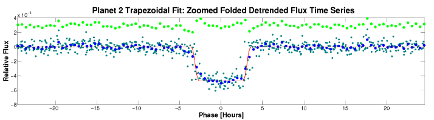

Thanks to the work of the amazing Rene Heller, there appears to be a large moon orbiting the gas giant Kepler-462c!
Heller, back in 2014, proposed a method for detecting exomoons in phase folded light curves, called the Orbital Sampling Effect, or OSE for short. OSE essentially works by recognizing the premature smeared transit of an exomoon before the planetary transit itself. I recently read one of his papers and thought to myself, "Why don't I look for signs of this OSE?"
I began looking through some Kepler DVRs for long period planets (They're farther away from their stars, and looking at our solar system, this appears to be helpful). If any of the planets have an orbital distance of 0.1AU or greater, I took a look the DVR report. A promising candidate, at least in these light curves, should look like this:
